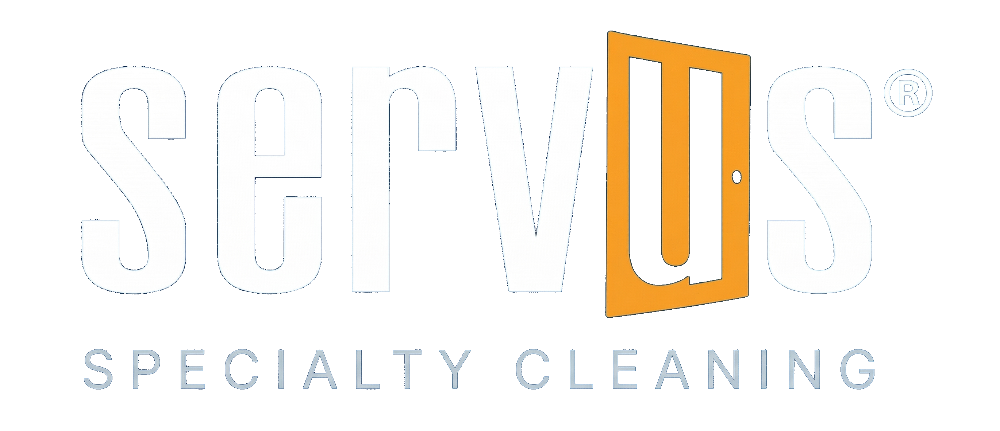

IICRC S100 Compliant
•
WorkSafeBC 2026
•
COR Certified
•
CRI Standards
IICRC S100 Compliant
•
WorkSafeBC 2026
•
COR Certified
•
CRI Standards

IICRC S100 Compliant
•
WorkSafeBC 2026
•
COR Certified
•
CRI Standards
This SOP defines the standard workflow for recurring commercial carpet maintenance programs. It covers both interim maintenance cleaning (Whittaker TRIO / encapsulation) and scheduled deep cleaning (HWE), ensuring consistent service across multi-area commercial facilities.
Applies to:
Key Definitions:
Review maintenance schedule in CRM — confirm cleaning type (interim vs deep).
Coordinate building access (key fob, security code, building manager contact).
Confirm after-hours procedures if applicable (alarm codes, lock-up protocol).
Check client's area map for priority zones and access restrictions.
Crew Leader Confirms schedule, coordinates building access, reviews priorities
Crew Member Verifies equipment is appropriate for cleaning type (TRIO vs truckmount)
Sign in at building security/front desk (if applicable).
Follow building-specific access protocols (elevators, restricted areas).
Set up cleaning signage: "Cleaning in Progress" barriers at work areas.
After-hours: verify alarm system is set to "cleaning mode" or disabled per protocol.
Crew Leader Handles security sign-in, confirms access protocol
Crew Member Sets up signage and barriers
Walk all scheduled areas — note soil levels, new stains, damage since last visit.
Compare against cleaning map/log from previous visit.
Photograph any new damage or concerns for documentation.
Determine if scheduled cleaning type is sufficient or if escalation is needed.
Crew Leader Assesses all areas, documents changes, decides on cleaning escalation
Crew Member Assists with photo documentation
Pre-vacuum all scheduled areas.
Apply encapsulation solution per manufacturer specs.
Run Whittaker TRIO in overlapping passes — ensure full coverage.
Focus extra passes on traffic lanes and soiled areas.
No rinse/extraction required — carpet is walk-ready immediately.
Crew Leader Monitors coverage quality, checks results
Crew Member Operates TRIO, performs pre-vacuum
Follow Steps 4–7 from Residential SOP (SOP-RES-001) with these commercial modifications:
Use commercial-grade pre-spray concentrations (typically stronger than residential).
Work in sections — complete one area fully before moving to next.
Coordinate with building schedule to allow drying time before occupancy.
Place air movers in completed areas immediately.
Crew Leader Manages section sequencing, coordinates with building contact for drying
Crew Member Performs extraction, moves air movers to completed sections
Check off each area on the cleaning map as completed.
Note any areas skipped (locked offices, occupied rooms) — document reason.
Log soil level and treatment for each area.
If recurring issues appear in same zones → flag for client discussion.
Crew Leader Maintains area tracking log, flags recurring issues
Crew Member Reports completed areas to Crew Leader
Spot-check completed areas under good lighting.
For interim cleaning: verify no visible residue, carpet has uniform appearance.
For deep clean: check for wand marks, remaining stains, over-wetting.
Take "after" photos of key areas (lobby, main corridors, conference rooms).
Crew Leader Performs quality spot-checks, approves completed areas
Crew Member Re-treats any flagged areas
Remove all equipment, signage, and barriers.
Ensure doors are locked, alarms are reset (after-hours protocol).
Sign out at security/front desk if applicable.
Leave area as found — move furniture back if repositioned.
Crew Leader Verifies building is secured, signs out
Crew Member Removes all equipment and signage
Complete maintenance visit log in CRM.
Upload photos (before/after for notable areas).
Note any areas requiring follow-up or escalation.
Update cleaning map with current soil assessments.
Submit maintenance report to building manager (per contract terms — weekly/monthly summary).
Crew Leader Completes all CRM documentation, submits reports
Crew Member Assists with photo uploads
Review upcoming schedule — note any special requests or contract changes.
Flag equipment needs (replacement pads for TRIO, chemical stock).
Communicate any building access changes to team.
Crew Leader Reviews next visit plan, communicates changes
Crew Member Prepares equipment and supplies for next scheduled visit
| Role | Key Responsibilities |
|---|---|
| Crew Leader | Building access coordination, area assessment, quality verification, CRM documentation, client/building manager communication |
| Crew Member | Equipment operation (TRIO/HWE), pre-vacuum, area completion, equipment maintenance |
| Account Manager | Contract management, maintenance schedule setup, client relationship, issue escalation |
| Dispatch / Office | Schedule coordination, access credential management, report distribution |
| When | Who | What | How |
|---|---|---|---|
| Schedule setup | Account Mgr → Building Mgr | Maintenance plan confirmation | |
| Day before visit | Office → Building Mgr | Visit reminder + access confirmation | |
| On arrival | Crew Leader → Security/Front Desk | Sign-in, access confirmation | In person |
| During cleaning | Crew Leader → Office | Progress updates, issues | Phone/text |
| After-hours | Crew Leader → Office | Check-in every 2 hours | Phone/text |
| Post-visit | Crew Leader → Building Mgr | Visit completion notification | Email/text |
| Monthly | Account Mgr → Client | Maintenance summary report | |
| Issue found | Crew Leader → Account Mgr | Escalation (damage, recurring stains) | Phone/email |
Visits completed as scheduled
Scheduled areas cleaned per visit
Annual contract renewals
Submitted within 24 hours
Quarterly — expect improving or stable
Target resolution window
This SOP defines the standard workflow for emergency and add-on spot/stain treatment calls. It covers rapid-response triage, treatment selection, client communication, and documentation for both standalone emergency calls and add-on treatments during scheduled service.
Applies to:
Key Definitions:
Gather information: what was spilled, when it happened, what surface (carpet type if known), what the client has already done.
Critical: Has the client attempted DIY treatment? (Some home products cause permanent damage.)
Classify urgency: same-day response vs next-business-day.
For add-on treatments: assess during pre-inspection walk-through.
Crew Leader / Office Collects spill details, classifies urgency, schedules response
Identify the stain type using FRP-009 (Spot vs Stain Identification).
Assess carpet fiber type (check label or use identification techniques from FRP-002).
Document with photos: size of affected area, color, current condition.
Test an inconspicuous area before applying any treatment.
Crew Leader Identifies stain type and fiber type, selects treatment approach
Crew Member Documents stain with photos, prepares testing area
Be honest about likely outcomes BEFORE starting treatment.
Use clear language:
Get verbal acknowledgment before proceeding.
Crew Leader Communicates expectations clearly, gets client acknowledgment
Select treatment based on stain type and fiber type (reference FRP-009 and FRP-003):
Crew Leader Selects and prepares treatment chemicals
Crew Member Assists with chemical mixing per label instructions
Apply treatment following the specific protocol for the stain type.
Always work from the outside of the stain inward (prevents spreading).
Blot — never rub or scrub (fiber damage risk).
Allow proper dwell time for chemical to work.
For stubborn stains: repeat treatment up to 3 times before escalating.
Rinse treatment area thoroughly after each application.
Extract with HWE if available, or blot with clean white cloth.
Crew Leader Applies and monitors treatment, decides on repeat applications
Crew Member Assists with extraction and cleanup
Evaluate results against initial photos.
If stain remains after 3 treatment attempts:
Apply Scotchgard to treated area if client has protector service.
Crew Leader Evaluates results, decides on follow-up treatment
Crew Member Takes after photos, applies protector if applicable
Show client the results, comparing before/after.
Explain what was done and any ongoing care instructions:
For stains that couldn't be fully removed: explain why and offer options (re-treatment, re-dyeing referral).
Collect sign-off.
Crew Leader Communicates results, provides care instructions, collects sign-off
Update CRM with: stain type, treatment used, results achieved, photos (before/after).
Flag any stains that may need follow-up treatment.
For warranty claims: set 7-day follow-up reminder in CRM.
For commercial clients: include in maintenance report.
Crew Leader Completes all documentation, sets follow-up reminders
Crew Member Assists with CRM photo uploads
| Role | Key Responsibilities |
|---|---|
| Crew Leader | Stain identification, treatment selection, client communication, quality decisions |
| Crew Member | Documentation, chemical preparation, extraction assistance, equipment handling |
| Office / Dispatch | Call intake, urgency triage, scheduling, follow-up reminders |
| When | Who | What | How |
|---|---|---|---|
| Call intake | Client → Office | Stain details and urgency | Phone |
| Dispatch | Office → Crew Leader | Job details, spill info | CRM/text |
| On arrival | Crew Leader → Client | Assessment and expectations | In person |
| During treatment | Crew Leader → Client | Progress updates if lengthy | In person |
| After treatment | Crew Leader → Client | Results, care instructions | In person |
| 7-day follow-up | Office → Client | Check if stain reappeared | Phone/text |
| If warranty re-treat | Office → Crew Leader | Schedule re-treatment visit | CRM |
Full or significant improvement
Emergency calls during business hours
Post-treatment survey average
Before + after for every treatment
Low reappearance rate
Resolved without return visit
Professional Carpet Care Certification
Contact: 604-435-1135 | info@servusgroup.com
160-21900 Westminster Hwy, Richmond BC V6V 2K3 | servusgrouplowermainland.com
© 2026 Servus Group. Developed by Douglas da Silva